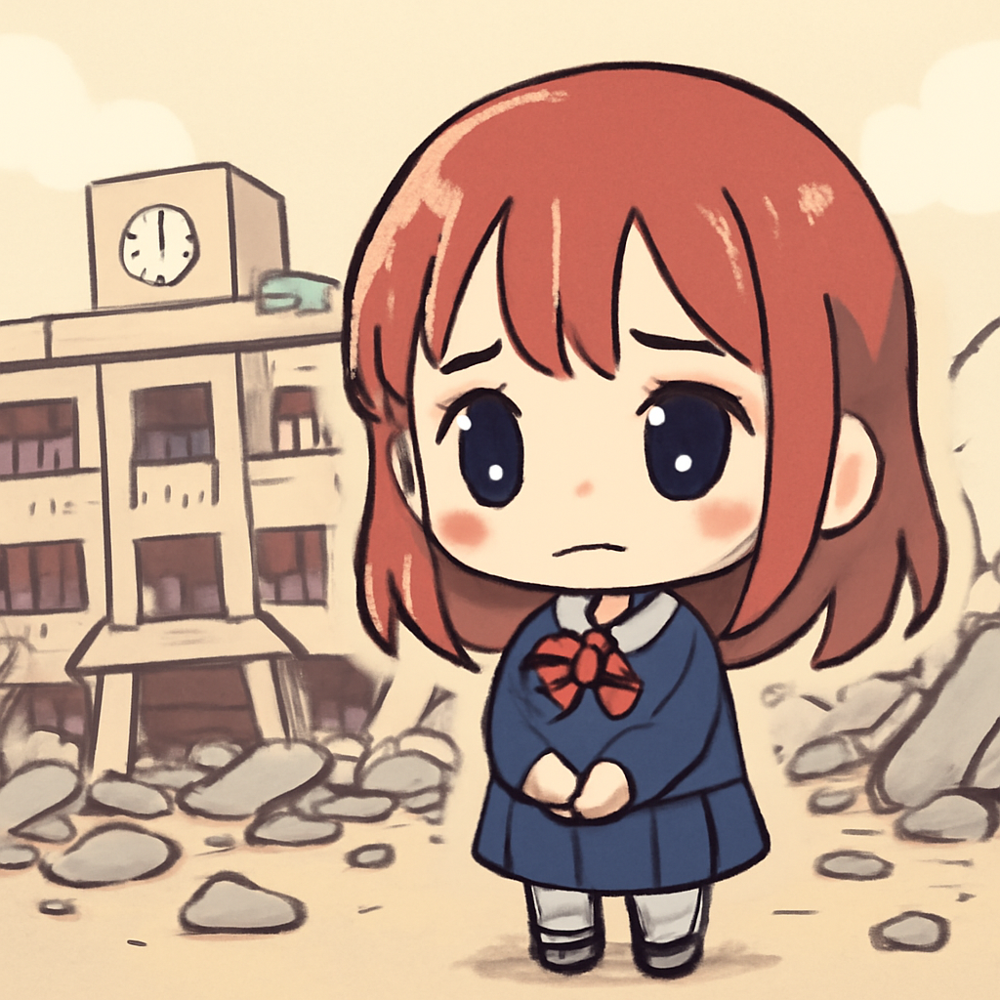
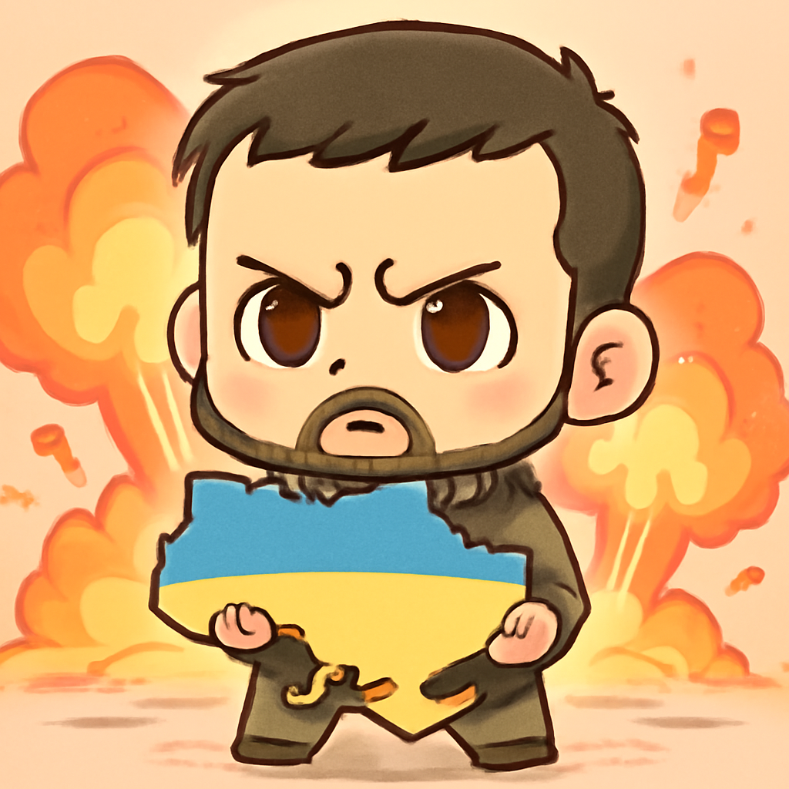
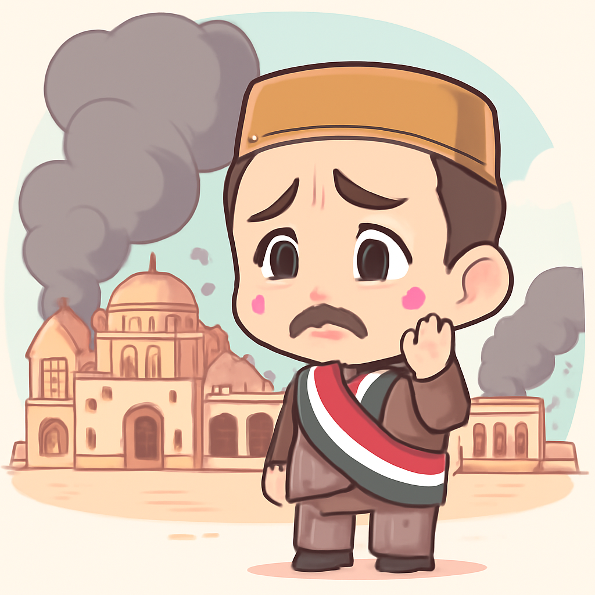
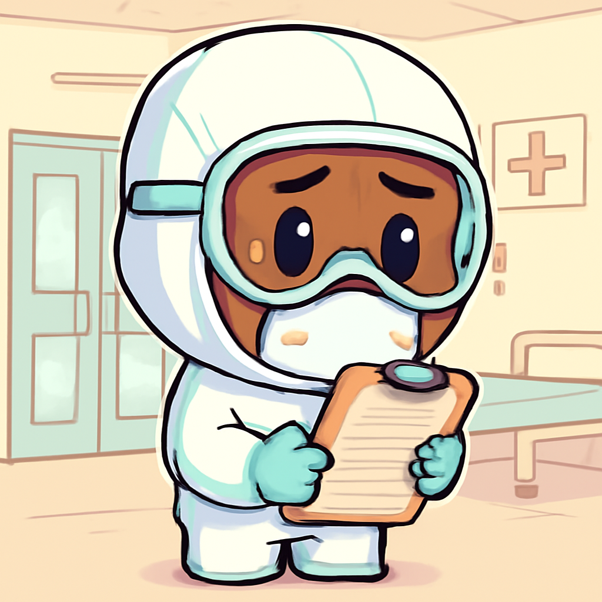
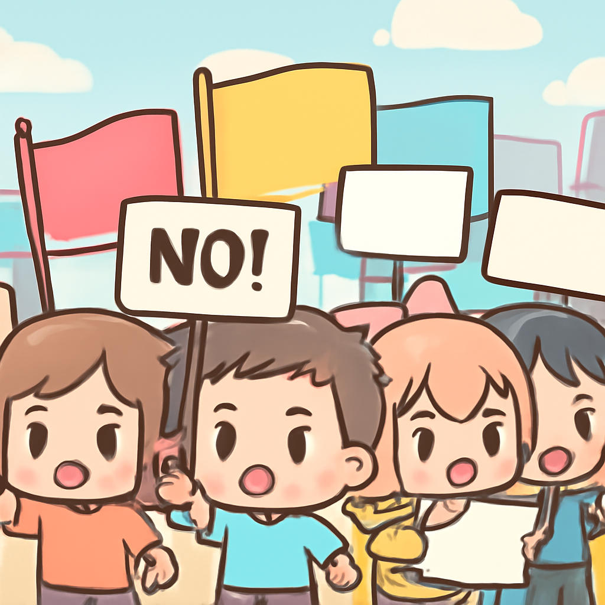

其一 · 巴基斯坦白沙瓦 · 學校屋頂倒塌致32人遇難
巴基斯坦白沙瓦一所學校，屋頂倒塌造成32人遇難。

巴基斯坦白沙瓦一所學校的屋頂在上課期間突然倒塌，造成至少32名學生和一位老師遇難，還有多人受傷。這起事故讓人憤怒的是，當地官員表示該建築物早就已經年久失修，卻依然在使用。希望這次悲劇能引起重視，讓「安全」不再是可有可無的選項。
🔗 原始新聞 ↗
2026-10-16 · 以古觀今，以笑抗愁
巴基斯坦白沙瓦一所學校，屋頂倒塌造成32人遇難。

巴基斯坦白沙瓦一所學校的屋頂在上課期間突然倒塌，造成至少32名學生和一位老師遇難，還有多人受傷。這起事故讓人憤怒的是，當地官員表示該建築物早就已經年久失修，卻依然在使用。希望這次悲劇能引起重視，讓「安全」不再是可有可無的選項。
🔗 原始新聞 ↗
烏克蘭總統澤連斯基重啟對俄羅斯油田的攻擊行動。

烏克蘭總統澤連斯基在接受《金融時報》訪問時表示，將恢復對俄羅斯能源設施的攻擊，這標誌著他對美國的要求表示不滿。隨著戰事持續，這種強硬立場可能會加劇兩國間的緊張關係，讓人不禁想問：這場國際政治的角力，究竟誰會笑到最後？
🔗 原始新聞 ↗
胡塞武裝導彈襲擊也門總部，造成五人遇難。

也門信息部長表示，五人在胡塞武裝的導彈攻擊中遇難，雖然總理及其他部長安然無恙，但這次襲擊再次凸顯了該地區的動盪局勢。這樣的攻擊令民眾的生活更加水深火熱，未來該如何走出這場無休止的衝突，真是讓人捏把冷汗。
🔗 原始新聞 ↗
肯尼亞通報第二例埃博拉感染，民眾憂心。

肯尼亞衛生部通報新增一例埃博拉感染病例，這對當地人來說無疑是一個警鐘。隨著疫情的再度升溫，政府的監控措施將面臨更大的壓力，民眾心中不免浮現出一絲恐慌。希望這種病毒不會再傳播，讓大家可以安心過日子，不必再擔心成為新聞的主角。
🔗 原始新聞 ↗
阿爾巴尼亞發生抗議，反對與卡許納有關的度假村計畫。

在阿爾巴尼亞，學生們對一項與卡許納有關的奢華度假村計畫展開了激烈抗議，抗議活動因為民眾對腐敗和生活成本上升的不滿而升級。當抗議者們揮舞著標語時，似乎在告訴這個國家，人民的聲音不容忽視。希望他們的堅持能為未來帶來更好的變化。
🔗 原始新聞 ↗